How to use LAMMPS on LiCO¶
This guide will demonstrate how to use LAMMPS on LiCO
LAMMPS Usage Process¶
Workflow¶
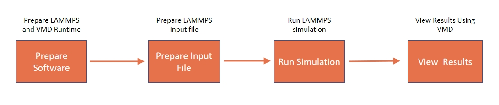
Prepare LAMMPS and VMD Runtime: Build LAMMPS and VMD by EasyBuild and create the Runtime on LiCO for subsequent LAMMPS simulations and visualization of results.
Prepare LAMMPS input files: Configure simulation parameters, initial configurations, simulation duration, and output options based on the simulation requirements.
Run LAMMPS simulation: Conduct the simulation according to the defined input file and record simulation data.
Use VMD to view results: Visualize and examine simulation results, and make adjustments and analyses as needed.
Prepare LAMMPS and VMD Runtime¶
1.Prepare the easyconfig file required by EasyBuild (EasyBuild is already installed)¶
a. Query LAMMPS and VMD easyconfig files
Open the command line on LiCO and execute the following command:
Load EasyBuild: module load EasyBuild
Search for available LAMMPS easyconfig files: eb --search lammps
Search for available VMD easyconfig files: eb --search vmd
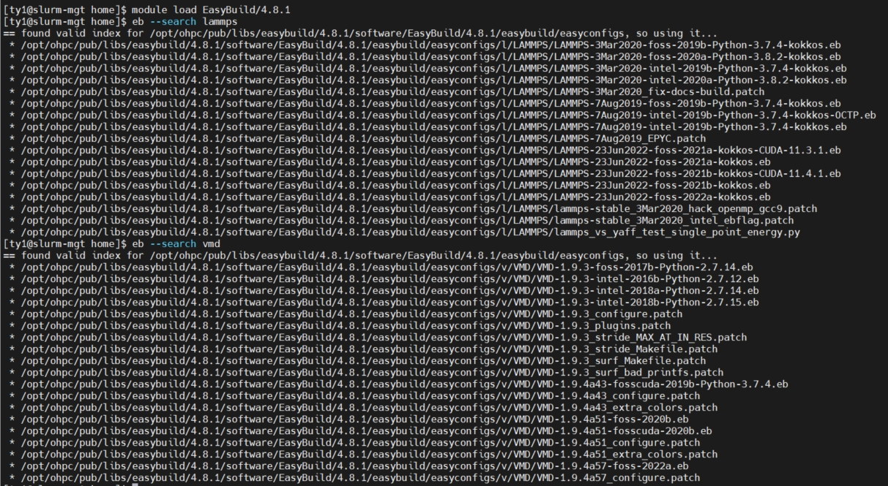
b. Find the corresponding EasyBuild easyconfig files for the following LAMMPS and VMD versions
Compile the CPU version of LAMMPS, please select：LAMMPS-23Jun2022-foss-2021b-kokkos.eb
Compile the GPU version of LAMMPS, please select：LAMMPS-23Jun2022-foss-2021b-kokkos-CUDA-11.4.1.eb
Compile the CPU version of VMD, please select：VMD-1.9.4a57-foss-2022a.eb
Compile the GPU version of VMD, please select：VMD-1.9.4a51-fosscuda-2020b.eb
c. In your user working directory, copy the content of the required LAMMPS or VMD version’s corresponding easyconfig file to a newly created easyconfig file, or directly copy the easyconfig file to your user working directory.
2.Compile Software Using EasyBuild on LiCO¶
Admin → Softwares → EasyBuild → Provide an easyconfig file
Open and log in LiCO, click on Softwares under the Admin menu, select EasyBuild.
Click on the Provide an easyconfig file option, choose the created easyconfig file, and click Next.
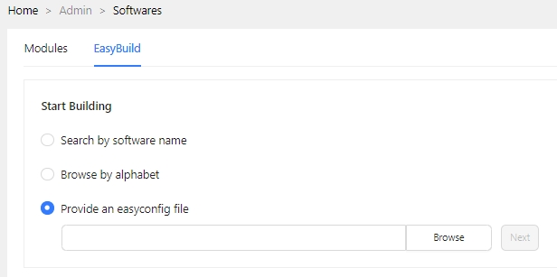
Provide an easyconfig file: The easyconfig file for the software that EasyBuild is going to compile
3.Specify EasyBuild compilation options¶
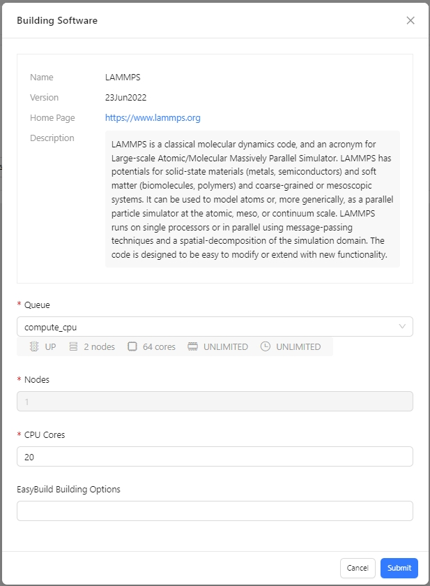
Easybuild Building Options: Optional compilation parameters for EasyBuild
For the compilation of the GPU versions of LAMMPS and VMD with EasyBuild, you need to specify the Easybuild Building Option: --cuda-compute-capabilities, and its value should be determined based on the GPU model. You can find the information at the following link: https://developer.nvidia.com/cuda-gpus#compute
4.Create LAMMPS and VMD Runtime on LiCO¶
Admin → Runtime ENV → Create
After successfully compiling LAMMPS or VMD using EasyBuild, you can find the corresponding modules compiled with EasyBuild under the Runtime ENV menu on LiCO. Select the desired module and create the corresponding Runtime for use in subsequent job submissions：
Create LAMMPS CPU Runtime: LAMMPS_CPU_ENV
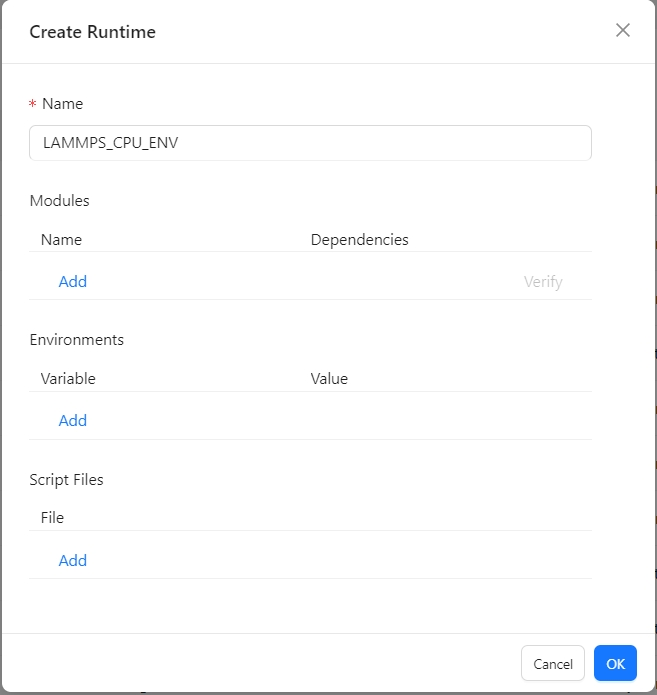
Click on Add under Modules, then in the pop-up box, search for ‘LAMMPS’ and select the LAMMPS CPU version module: LAMMPS/23Jun2022-foss-2021b-kokkos
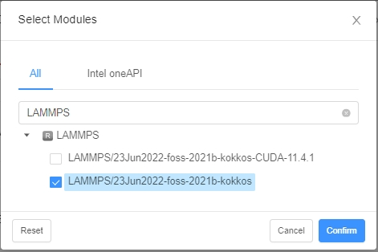
Create LAMMPS GPU Runtime : LAMMPS_GPU_ENV
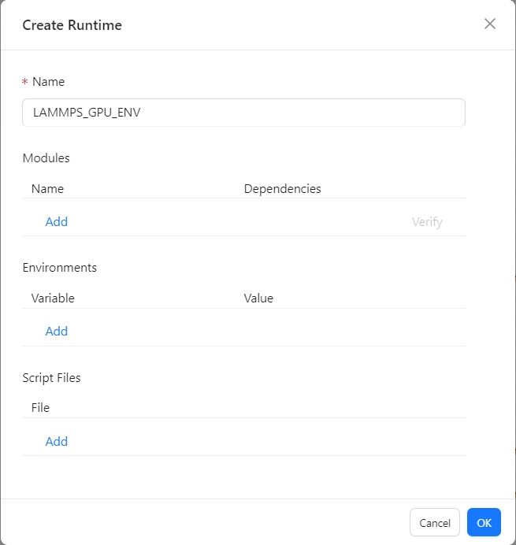
Click on Add under Modules, then in the pop-up box, search for ‘LAMMPS’ and select the LAMMPS GPU version module: LAMMPS/23Jun2022-foss-2021b-kokkos-CUDA-11.4.1
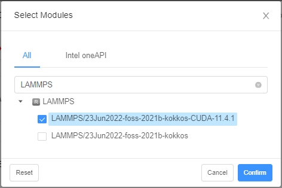
Create VMD CPU Runtime : VMD_CPU_ENV
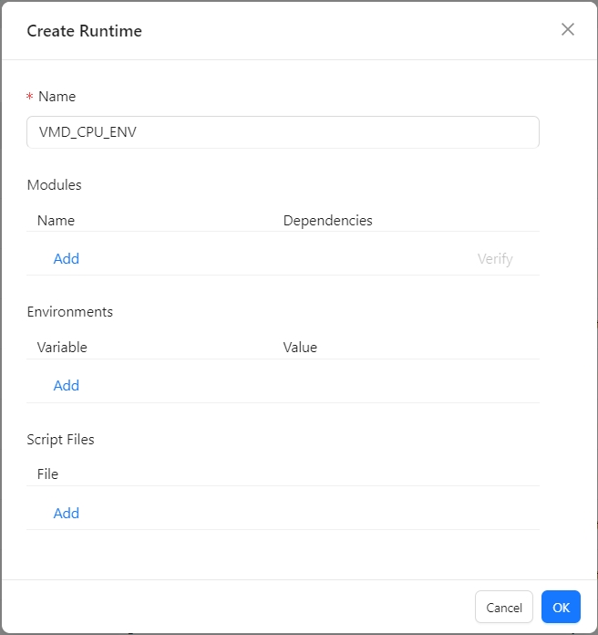
Click on Add under Modules, then in the pop-up box, search for ‘VMD’ and select the VMD CPU version module: VMD/1.9.4a57-foss-2022a
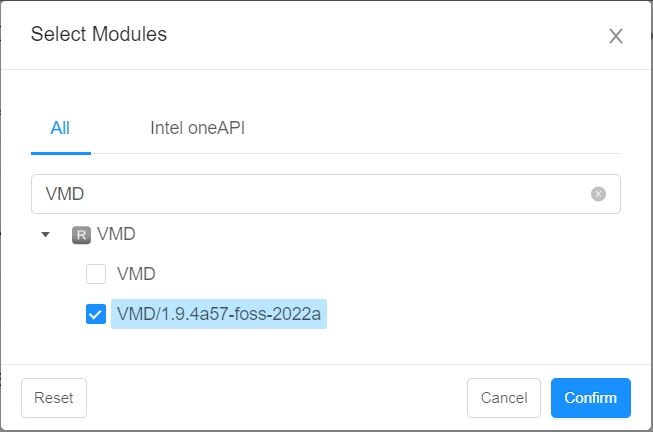
Create VMD GPU Runtime : VMD_GPU_ENV
Click on Add under Modules, then in the pop-up box, search for ‘VMD’ and select the VMD GPU version module: VMD/1.9.4a51-fosscuda-2020b
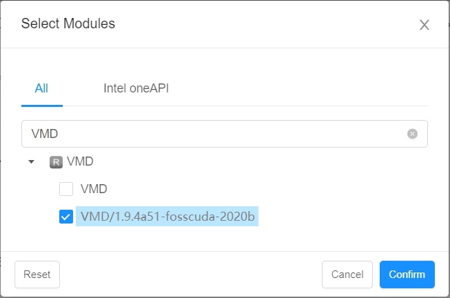
(You can also click Add under Environments in LiCO Runtime ENV to add the necessary environment variables for your job, such as ‘OMP_NUM_THREADS’.)
Prepare the LAMMPS input file¶
LAMMPS executes calculations by reading commands from an input script (a text file) one line at a time. When the input script is completed, LAMMPS exits. For syntax and tutorials related to writing LAMMPS input files, you can refer to: https://docs.lammps.org/Commands_input.html. Finally, place the LAMMPS input file or any possible dependency files in the LiCO user’s working directory.
Here are two simple examples of LAMMPS input files：¶
1.Example 01： in.lj
# 3d Lennard-Jones melt
variable x index 4
variable y index 4
variable z index 4
variable xx equal 20*$x
variable yy equal 20*$y
variable zz equal 20*$z
units lj
atom_style atomic
lattice fcc 0.8442
region box block 0 ${xx} 0 ${yy} 0 ${zz}
create_box 1 box
create_atoms 1 box
mass 1 1.0
velocity all create 1.44 87287 loop geom
pair_style lj/cut 2.5
pair_coeff 1 1 1.0 1.0 2.5
neighbor 0.3 bin
neigh_modify delay 0 every 20 check no
fix 1 all nve
#run 100
dump 1 all custom 100 trajectory.lammpstrj id type x y z vx vy vz
dump_modify 1 sort id
run 100
undump 1
2.Example 02： input.lammps
# This LAMMPS input script simulates LJ particles in a 2D box
# Written by Simon Gravelle (https://simongravelle.github.io/)
# Find more scripts here: https://github.com/simongravelle/lammps-input-files
# LAMMPS tutorials for beginners: https://lammpstutorials.github.io/
# main parameters
units lj
dimension 2
atom_style atomic
pair_style lj/cut 2.5
boundary p p p
# create system and insert atoms
region myreg block -30 30 -30 30 -0.5 0.5
create_box 2 myreg
create_atoms 1 random 1500 341341 myreg
create_atoms 2 random 100 127569 myreg
include parm.lammps
# minimisation
minimize 1.0e-4 1.0e-6 1000 10000
reset_timestep 0
# dynamics
fix mynve all nve
fix mylgv all langevin 1.0 1.0 0.1 1530917
fix myefn all enforce2d
timestep 0.005
# outputs
thermo 1000
dump mydmp all atom 1000 dump.lammpstrj
# run
run 500000
parm.lammps
# atom settings
mass 1 1
mass 2 1
pair_coeff 1 1 1.0 1.0
pair_coeff 2 2 0.5 3.0
neigh_modify every 1 delay 5 check yes
Run the LAMMPS simulation¶
1.Run the LAMMPS simulation using CPU¶
Job Templates → LAMMPS
Open and log in LiCO, select the LAMMPS template
Fill in the template parameters¶
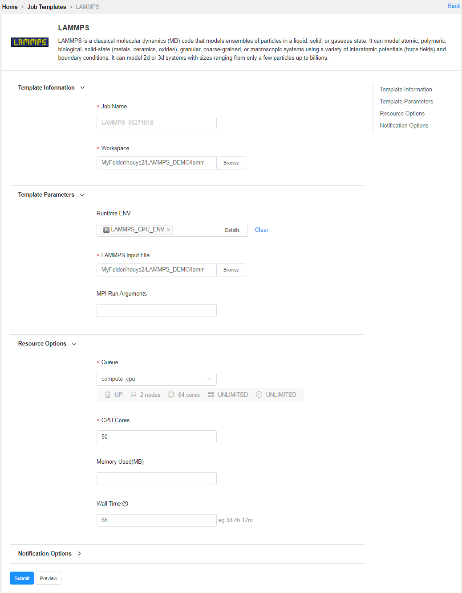
Runtime ENV: LAMMPS CPU Runtime created through LiCO.
Workspace: The directory where the LAMMPS input file is located.
LAMMPS Input File: The provided LAMMPS input file.
MPI Run Arguments: mpirun parameters.
CPU Cores: The number of CPU cores to be used for job execution.
2.Run the LAMMPS simulation using GPU¶
Job Templates → LAMMPS GPU
Open and log in LiCO, select the LAMMPS GPU template
Fill in the template parameters¶
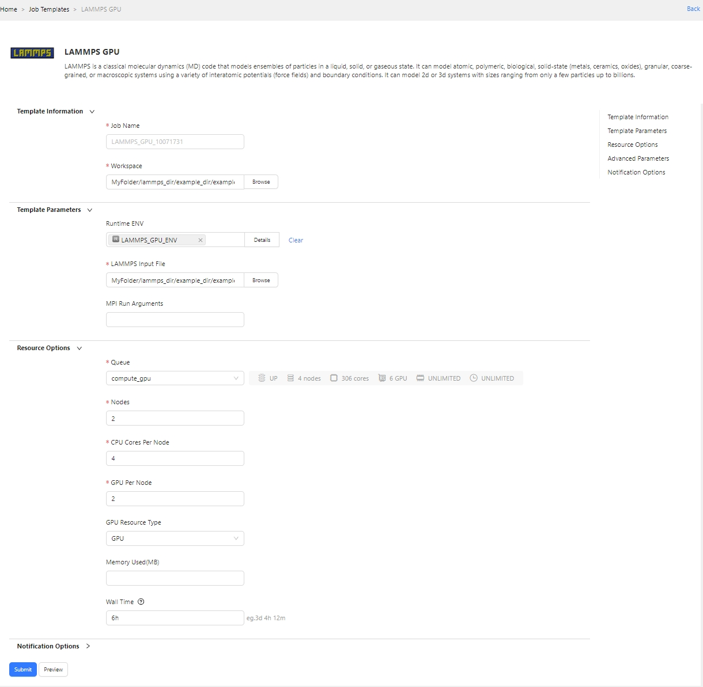
Runtime ENV: LAMMPS GPU Runtime ENV created through LiCO.
Workspace: The directory where the LAMMPS input file is located.
LAMMPS Input File: The provided LAMMPS input file.
MPI Run Arguments: mpirun parameters.
Nodes: Number of nodes.
CPU Cores Per Node: Number of CPU cores allocated per node, which will enable the same number of LAMMPS processes on each node for GPU usage.
GPU Per Node: Number of GPUs allocated per node.
3.Submit job¶
Click Submit to submit the job. The LAMMPS job runs successfully, and you can view the job log
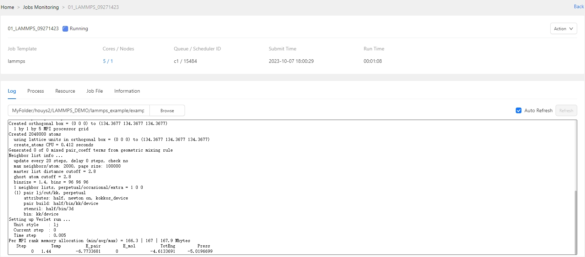
4.Check if the result files exist¶
When the job is completed, the job’s working directory will contain files similar to the following:
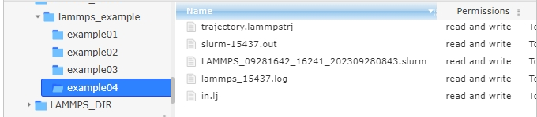
If you have used commands like “dump” in your LAMMPS input file to save simulation data, upon completion of the LAMMPS run, you will be able to see simulation result files with the “.lammpstrj” extension in the working directory.
Viewing LAMMPS simulation data¶
Cloud Tools → TigerVNC
1.Configure TigerVNC¶
Click the settings button on the TigerVNC page to open TigerVNC Settings, configure TigerVNC, and choose the VMD Runtime ENV previously created through LiCO
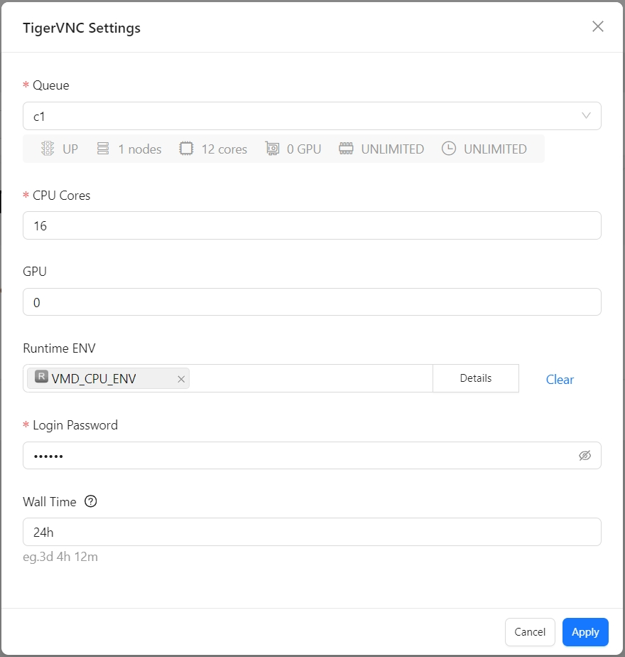
2.Start TigerVNC¶
After clicking Launch to start TigerVNC and successfully launching, enter the password to access the TigerVNC desktop. Within VNC, open the command line and enter the command vmd /path/to/lammps_result_file and press Enter. This will open the VMD program and load the specified LAMMPS simulation result file.
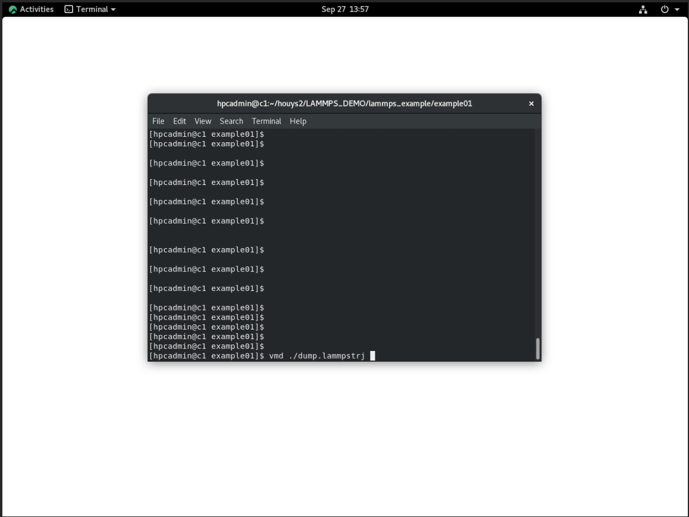
3.View and analyze the LAMMPS simulation result¶
After opening the LAMMPS simulation result file in VMD, the following visualization window will be displayed.
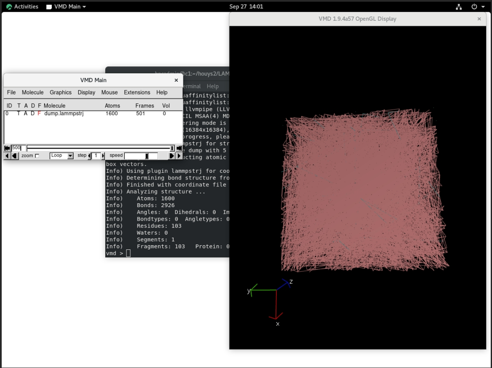
Modify VMD configurations to adjust the result display for a more intuitive visualization of the simulation status.
In VMD, click on the menu Graphics → Representations to configure settings such as Drawing Method and Size, which can change the molecular simulation display mode for different visualization effects.
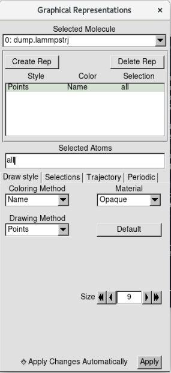
Click play forward in the bottom right corner of the VMD Main page to animate the LAMMPS simulation results dynamically.
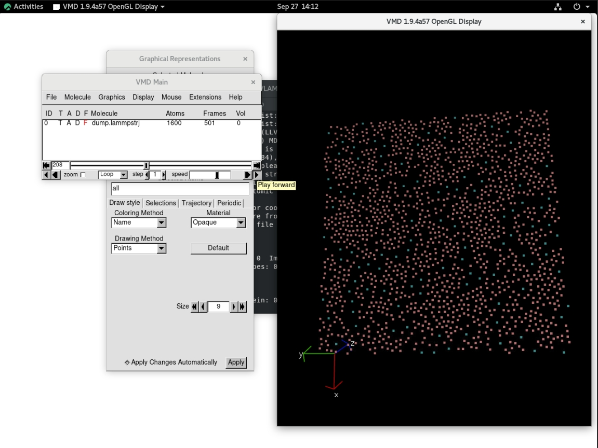
Troubleshooting¶
Failure to download dependencies during EasyBuild software compilation due to the inability to connect to the external network:
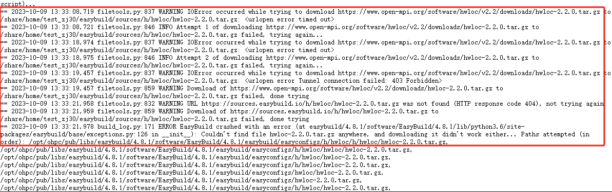
Solution: Ensure that the EasyBuild environment can connect to the external network, or manually download the missing dependencies and place them in the location specified in the EasyBuild compilation log.
When compiling the VMD-1.9.4a57-foss-2022a with EasyBuild, it fails to download Perl-related extensions:
Solution: Go to https://www.cpan.org/src/ search for relevant extension packages, manually download and upload them to the path displayed in the compilation log where the extension package needs to be stored.
When compiling the VMD-1.9.4a57-foss-2022a with EasyBuild, it fails to download the
pixman-0.40.0.tar.gzdependency:Solution: Go to https://www.linuxfromscratch.org/blfs/view/10.1-systemd/general/pixman.html, manually download
pixman-0.40.0.tar.gz, and upload it to the path displayed in the compilation log where the dependent package needs to be stored.When compiling the VMD-1.9.4a51-fosscuda-2020b with EasyBuild, the
libltdllibrary is missing:Error Message: “libltdl is required for modules and OpenCL builds”
Solution: Run
yum install -y libtool-ltdl-develto install thelibltdldevelopment package.When compiling the VMD-1.9.4a51-fosscuda-2020b with EasyBuild, the download of
NVIDIA-OptiX-SDK-6.5.0-linux64.shfails:Solution: Log in to https://developer.nvidia.com/designworks/optix/downloads/legacy, manually download
NVIDIA-OptiX-SDK-6.5.0-linux64.sh, and upload it to the path displayed in the compilation log where the file needs to be stored.